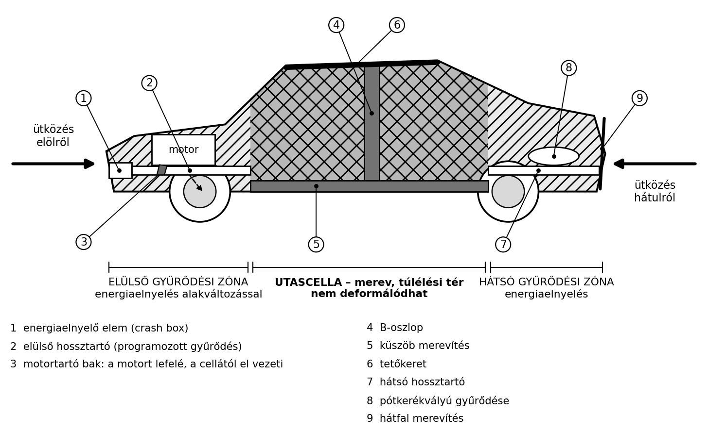

Egy autószerelő műhelyben gyakran hallani, hogy az ügyfél elsősorban a motor teljesítményére, a fogyasztásra vagy a felnikre kíváncsi. Ugyanakkor a biztonság és a hosszú élettartam szempontjából a legfontosabb részegység, amellyel a tulajdonosok ritkán törődnek, maga a karosszéria és az alváz. A műszaki vizsgára bemutatott járműnél a vizsgabiztos először az alvázszámot, a korrózióállapotot, a teherviselő elemek átrozsdásodását és a korábbi sérülések javítását nézi. Ha az önhordó karosszéria fő elemei elkorhadtak vagy szakszerűtlenül lettek javítva, akkor a fék és a futómű tökéletes állapota sem menti meg a járművet a vizsga elutasításától. Az autószerelőnek tehát fel kell ismernie a teherviselő szerkezet sérüléseit, ismernie kell a biztonsági zónákat, és tudnia kell, mikor kötelező a munkát karosszérialakatosnak átadnia.
Képzeljünk el egy modern alsó-középkategóriás önhordó karosszériát madártávlatból, tetőlemez nélkül. A szerkezet három fő zónára bontható. Elöl a motortérben a hossztartók zárt üregei gyűrődési zónát alkotnak, amely ütközéskor harmonikaszerűen összenyomódik, elnyeli az energiát, és távol tartja a merev motort az utastértől. A középső rész az utascella: nagyszilárdságú acélból készült B-oszlopok, küszöbök, tetőkereszt és padlólemez-merevítés alkotja, amelynek egyetlen feladata, hogy túlélő teret tartson fenn. Hátul a csomagtartó alatti hátsó hossztartók szintén gyűrődve védik az utasteret. Ezt a hármas tagolást szemlélteti az alábbi oldalnézeti vázlat is.

A nyilak az ütközés irányát jelzik: az energiát a gyűrődési zóna alakváltozással elnyeli, az utascella merev marad, így a túlélési tér megmarad. Az elülső zónában az energiaelnyelő elem és a hossztartó gyűrődik, a motortartó bak a motort lefelé, az utascellától el vezeti.
Definíció. Az alváz (chassis, frame) a jármű teherviselő váza, amely a hajtáslánc, a futómű, a kormányzás, a fék és a felépítmény valamennyi szerkezeti terhelését összegyűjti és továbbítja. Hagyományos felépítésben ez egy különálló létraalváz vagy rácsszerkezet, amelyre a karosszéria külön felépítményként kerül.
Definíció. Az önhordó karosszéria (self-supporting body, monocoque body) olyan építési mód, amelyben a karosszéria lemez- és profil szerkezete maga viseli az összes járműterhelést, tehát különálló alvázkeretre nincs szükség. A merevséget a zárt üreges szelvényekből összeállított, ponthegesztett, ragasztott és részben szegecselt lemezváz adja.
A létraalvázat ma elsősorban terepjárókban, kisteherautókban és haszonjárművekben találjuk. Két hossztartóból és az azokat összekötő kereszttartókból áll. Előnye a nagy terhelhetőség, a moduláris felépítés és az, hogy a sérült felépítmény cseréje nem érinti a futómű geometriáját. Hátránya a nagyobb önsúly, a magasabb súlypont és a kisebb torziós merevség a modern önhordó szerkezetekhez képest. A teherbírás növelése érdekében a hossztartók gyakran változó magasságú zárt szelvények; a meghajlított keret a rugózás kiegészítő elemeként is dolgozik.
Az önhordó karosszéria a személyautók és a legtöbb modern kisteherautó uralkodó építési módja. A szerkezeti elemeket acéllemezekből hidegen sajtolják, majd ponthegesztéssel, lézerhegesztéssel, ragasztással vagy önkilyukasztó szegeccsel kötik össze. A fő teherviselő elemek zárt üregei a csavaró- és hajlítómerevség gerincét adják. A merevség növelése mellett arra is ügyelnek, hogy az üregek korrózióvédelemmel, viasszal vagy üregvédővel legyenek kezelve, mert ezek a kritikus pontok belülről rozsdásodnak.
A modern karosszériákban anyagkeveréket alkalmaznak:
Az ábrán a pontozott elemek lágy acélból, a vonalkázottak nagyszilárdságú acélból (HSS), a kereszt-sraffozottak extra nagyszilárdságú acélból (UHSS, AHSS) készülnek, az üres, vastag körvonalú elemek alumíniumból. A HTML-kiadásban anyagonként külön is megjeleníthetők, és rámutatásra kiderül, hogy az elem javítható vagy csak gyártói előírás szerint cserélhető.
Szabály. A csavaros kötésű, hagyományos javíthatóság az önhordó karosszériánál csak a könnyen cserélhető elemekre (ajtó, csomagtérfedél, motorháztető, sárvédő) vonatkozik. A teherviselő belső elemeket a gyártó a javítási utasításban szigorúan szabályozza; bizonyos zónákban az utólagos hőkezelés vagy hegesztés tilos.
Definíció. Az aktív biztonság a jármű azon tulajdonságainak és rendszereinek összessége, amelyek segítenek a baleset bekövetkezésének megelőzésében. Hétköznapi megfogalmazásban: minden, ami elvezeti az autót a veszélyhelyzettől.
Az aktív biztonság négy részterületre bontható, amelyek a vezető és a jármű közötti körfolyamatot fedik le:
Definíció. A passzív biztonság a jármű mindazon szerkezeti és berendezési tulajdonsága, amely a baleset bekövetkezése után csökkenti a járműben ülők és a gyalogosok sérülésének súlyosságát.
A passzív biztonságot három fő területre osztjuk:
A töréstesztek (például Euro NCAP, ellenőrizendő: az aktuális protokoll és értékelési rendszer) az autót frontális, oldal-, hátsó (ostorcsapás) és gyalogosütközésben vizsgálják. A csillagok számát a mérési eredmények és a biztonsági berendezések megléte alapján adják, így az osztályzat csak azonos protokoll mellett hasonlítható össze.
Előírás. A járművek törésbiztonsági és gyalogosvédelmi követelményeit európai uniós típusjóváhagyási előírások és ENSZ-EGB előírások határozzák meg (ellenőrizendő: a konkrét előírás- és szabványszámok, például a gyalogosvédelmi és frontális ütközési előírások köre). A konkrét javítási eljárások az adott gyártó javítási utasításából következnek.
Továbbvitt eredmény. Az aktív és passzív biztonsági zónák felosztását használjuk a Vezetőtámogató rendszerek és kalibrálásuk alfejezetben az ADAS-funkciók rendszerezésekor, valamint a Írásbeli és szóbeli vizsgafelkészülés: témakör-térkép és mintafeladatok közlekedésbiztonsági témakörénél.
A gyűrődési zóna működése az energiaelnyelésen alapul. Ütközéskor a jármű mozgási energiája:
ahol a jármű tömege, az ütközési sebesség. Ezt az energiát a szerkezet alakváltozása emészti fel. A gyűrődési zóna kialakításánál az a cél, hogy a deformáció útja minél hosszabb legyen, miközben a lassulás a vezetőfülke irányában ne lépjen túl egy emberre még elviselhető értéket. Minél hosszabb a deformációs út, annál kisebb átlagos erő jut az utascellára.
Példa. Ha egy tömegű autó sebességgel ér el egy fix akadályt, akkor a sebességet átváltva . A mozgási energia:
Ha az elülső gyűrődési zóna 0,6 métert deformálódik, és átlagos fékezőerővel számolunk, az átlagos erő . Egyenletes lassulást feltételezve a jármű átlagos lassulása , ami kb. 16-szorosa a nehézségi gyorsulásnak (≈ 16 g). Ez a személyre ható lassulást a belső légzsák és övrendszer külön módosítja; a merev utascellával a túlélési tér megmarad. Az értékek tanulási példák; a pontos gyűrődési hosszt a gyártói szerkezet és a törésteszt adja meg (ellenőrizendő: a jármű gyártói adata).
A görbéken látszik, hogy kétszeres sebességnél az energia négyszeres, és ugyanannyi energiát rövidebb (0,4 m) gyűrődési úton nagyobb átlagerő nyel el (50 km/h-nál 338 kN a 225 kN helyett). A HTML-kiadás kalkulátorában a tömeg, a sebesség és a gyűrődési út változtatható; kijelzi az energiát, az átlagerőt és az átlagos lassulást.
A sérült karosszéria javításánál az autószerelőnek először el kell döntenie, hogy a munka a gépműhely, a karosszérialakatos vagy a márkaszerviz hatáskörébe tartozik-e. Az általános szerelő feladata a műszaki állapot felmérése, a korróziós állapot és a biztonsági rendszerek ellenőrzése, nem pedig a teherviselő elem önálló hegesztése vagy egyengetése.
A gyártói javítási utasítások gyakran előírják:
Tilos. A biztonsági rendszerek (légzsák, övfeszítő, ABS/ESP, HV-rendszer) kiiktatása, illetve a sérült utascella-elemek gyári adatoktól eltérő javítása. A gépjárművet az időszakos műszaki vizsgán elutasítják, ha a teherviselő elemek javítása szakszerűtlen.
Az önhordó karosszéria javítása után a gyárival azonos minőségű korrózióvédelmet kell helyreállítani. Az üregekben és a meleg hatásnak kitett lemezéleknél a védőréteg leggyakrabban sérül. A javításnál jellemző lépések:
Környezetvédelem. A karosszériajavítás során keletkező csiszolási por, festék, hígító, üregvédő anyag és régi lemez darab veszélyes hulladék lehet. Az anyagok biztonsági adatlapja alapján kell gyűjteni, tárolni és elszállíttatni (ellenőrizendő: a hatályos hulladékjogi előírás). A festék- és korrózióvédő anyagok oldószertartalma miatt megfelelő szellőzés és légzésvédelem szükséges.
A karosszéria ellenőrzésekor az autószerelő az alábbiakat vizsgálja:
A geometriai eltérést az ütközés utáni javításkor karosszéria-mérőpadon, a gyártói referenciapontok alapján kell ellenőrizni. A mérődiagram pontjainak eltérése megmutatja, hogy a futómű bekötési pontokra és az utascella kritikus pontjaira a karosszéria visszaállítható-e. Az egyes pontok mérési hibáit a gyártói adatok jelölik (ellenőrizendő: a gyártói javítási adat).
Egy ügyfél az éves szervizre hozza a tízéves alsó-középkategóriás autóját. Az átvizsgálás során a szerelő a bal oldali elülső hossztartón, a motortartó bak mögött korrodált csatlakozást talál. A fék- és futómű-alkatrészek jó állapotúak, de a hossztartó kritikus csatlakozása a futómű-bekötési pont közelében okozhat merevségvesztést. A szerelő a gyártói rajz és a korróziós zóna alapján megállapítja, hogy a sérülés a teherviselő elemben van; a javítás karosszérialakatos feladat, mert a hossztartó cseréjéhez a gyártói ragasztási és ponthegesztési eljárás szükséges. Az ügyfélnek elmagyarázza, hogy a műszaki vizsga előtt ezt kötelező javítani, mert ellenkező esetben a járművet elutasítják. A javítás után a mérési jegyzőkönyv igazolja a geometriai pontok gyártói tűrésen belüli helyzetét.
Cél. A jármű teherviselő szerkezete és biztonsági rendszereinek szemrevételezéses ellenőrzése ügyfélpanasz vagy műszaki vizsgára felkészítés előtt.
Jármű- és adatazonosítás. Rögzítsd az alvázszámot, motorszámot, kilométeróra-állást, a jármű típusát, évjáratát és a gyártói javítási adatbázisra vonatkozó hivatkozást.
Szükséges eszközök. Emelő, bakok, lámpa, tükör, kalapács a korróziós kopogtatáshoz (gyári lemeznél csak óvatos üregellenőrzés), mérőszalag, tolómérő, fényképfelvétel, munkalap.
Biztonsági korlát. A feladat tanműhelyi környezetre, oktató felügyeletére és a gyártói javítási utasítás betartására vonatkozik; a megadott értékek tanulási példák. Jármű alá csak mechanikusan reteszelt műhelyi járműemelőn, vagy bakra támasztva szabad bemenni.
Munkalépések.
Tipikus hibák.
Dokumentálás. A munkalapon szerepeljen az alvázszám, a vizsgálat időpontja, a talált eltérések, a javítási javaslat és a műszaki vizsga szempontjából releváns megjegyzés.
Hiba. A szerelő az alváz és a létraalváz kifejezést szinonimaként használja, pedig az önhordó karosszéria is alvázként funkcionál. Helyes gyakorlat: az alváz a teherviselő váza a járműnek, függetlenül attól, hogy külön keret vagy önhordó lemezszerkezet.
Hiba. A gyűrődési zónát bármilyen acélból hegesztett megerősítéssel javítják, mert a látszólag erősebb elem biztonságosabbnak tűnik. Valójában a merevítés elviheti az energiaelnyelés tervezett helyét, és az utascellát terhelheti túl.
Hiba. A korróziót csak az üreg külső élén javítják, a belső felületet nem védik. A varrat melletti korrózió gyorsan továbbterjed, és a javítás utáni állapot rosszabb, mint a gyári.
1. feladat (A). Definiáld az önhordó karosszériát és a gyűrődési zónát!
2. feladat (A). Számítsd ki az energiaelnyelési példában szereplő erőt, ha a gyűrődési hossz 0,4 m!
3. feladat (B). Egy jármű teherviselő eleme korrodált. Melyik vizsgálati lépés hiányzott, ha a hiba a műszaki vizsga elutasításához vezetett?
4. feladat (B). Hasonlítsd össze a létraalváz és az önhordó karosszéria javítási lehetőségeit a biztonsági zónák szempontjából!
5. feladat (C). A karosszéria-javítás során az egyik műhely dolgozója a sérült B-oszlopot nagy szilárdságú acéllemezzel, de a gyártói hegesztési tervtől eltérően javította. Mi lehet a következmény?
6. feladat (D). Egy ügyfél panasza: a jármű kormányzása kanyarban bizonytalan, a gumiabroncsok egyenletesen kopnak, de a futómű-alkatrészek jók. Milyen megfigyelés és mérés után döntöd el, hogy a karosszéria geometriája a hibás?
Önellenőrzés – válaszok.
1. feladat. Az önhordó karosszéria a jármű összes terhelését viselő lemez- és profil szerkezet, amelynél nincs különálló alvázkeret. A gyűrődési zóna a jármű elején és hátulján kialakított, energiát elnyelő, deformálódó szerkezet, amely az ütközési energiát alakváltozással csökkenti, hogy az utascella lassulása túlélhető maradjon.
2. feladat. , , . A mozgási energia . Az átlagos erő . Az eredmény azt mutatja, hogy rövidebb gyűrődési hossznál nagyobb átlagos erő jut az utascellára. (Az értékek tanulási példák.)
3. feladat. Hiányzott a jármű alá bemenés és a kritikus teherviselő elemek, különösen az üregek belsejének rendszeres vizsgálata. A külső lemez nézése nem elég; a hossztartó belső korrózióját a gyártói ellenőrzési pontok szerint, üregvédő eltávolítása nélkül is gyanús folt jelezte.
4. feladat. A létraalvázas járműnél a keret önállóan ellenőrizhető és javítható, a felépítmény cseréje egyszerűbb. Az önhordó karosszéria javításánál a biztonsági zóna határait a gyártó pontosan meghatározza; a gyűrődési zóna elemeit nem szabad merevíteni, az utascella elemei csak előírt módon javíthatók. A létraalváz előnye a moduláris javíthatóság, de tömeg és merevség szempontjából hátrányos.
5. feladat. A B-oszlop az utascella kulcseleme, a gyártói hőkezelési és hegesztési tervtől eltérő javítás a nagyszilárdságú acélban lágy zónát, repedést és csökkent szilárdságot okozhat. Oldalütközésnél az oszlop nem nyújt elegendő túlélést, a jármű a törésteszteken sem felelne meg. A hibát „szakszerűtlen javítás” gyakorlatként mutatjuk be; a helyes eljárás a gyártói adatot követő, dokumentált karosszérialakatos javítás.
6. feladat. Először a futómű-alkatrészek és a kerékbeállítás ellenőrzése. Ha a futómű jó, megméred a karosszéria geometriai pontjait a gyártói mérődiagram szerint: az oldalsó hossztartókat, a csomagtartó alatti padlót, a futómű-bekötési pontokat. Ha a referenciapontok eltérést mutatnak, akkor a karosszéria torzult, ezért a járművet karosszéria-mérőpadon kell tovább vizsgálni és javítani.
Az alváz a jármű teherviselő váza, amely lehet különálló létraalváz vagy önhordó karosszéria. A létraalvázat főleg terepjárókon és haszonjárműveken használjuk, az önhordó építésmód pedig a személyautók jellemzője. A modern önhordó karosszéria anyagkeverékkel készül: a lágyacél a gyűrődő zónáké, a nagyszilárdságú acél és az alumínium az utascella merevségéé. Az aktív biztonság a baleset megelőzésére szolgál (menet-, kondíciós, észlelési és kezelési biztonság); a passzív biztonság a baleset következményeit enyhíti (gyűrődési zóna, utascella, légzsák, öv). A gyűrődési zóna az ütközési energiát programozott alakváltozással nyeli el, a merev utascella a túlélő teret védi. A javításnál a gyártói utasítás elsőbbsége érvényes; a teherviselő elemek hegesztése, a biztonsági rendszerek és a korrózióvédelem mindig szigorú eljárás szerint történik. Továbbvitt eredmény. Az aktív és passzív biztonsági zónák felosztását a vezetőtámogató rendszereknél és a vizsgafelkészülésnél használjuk.
Forrástípusok: ENSZ-EGB járműbiztonsági előírások; európai uniós
típusjóváhagyási rendeletek; Euro NCAP törésteszt-protokoll; a gyártói
javítási utasítások és mérődiagramok; autóipari anyagismereti
szakkönyvek.
Ellenőrizendő állítások: az ütközésbiztonsági és gyalogosvédelmi
előírások konkrét számai, az Euro NCAP aktuális protokollverziója és
értékelési rendszere, a karosszéria-mérőpad pontjaira vonatkozó gyártói
tűrések, valamint a hegesztési és korrózióvédelmi eljárások gyártói
feltételei. Az energia- és erőpélda tanulási példa, nem egy konkrét
jármű mérési eredménye.